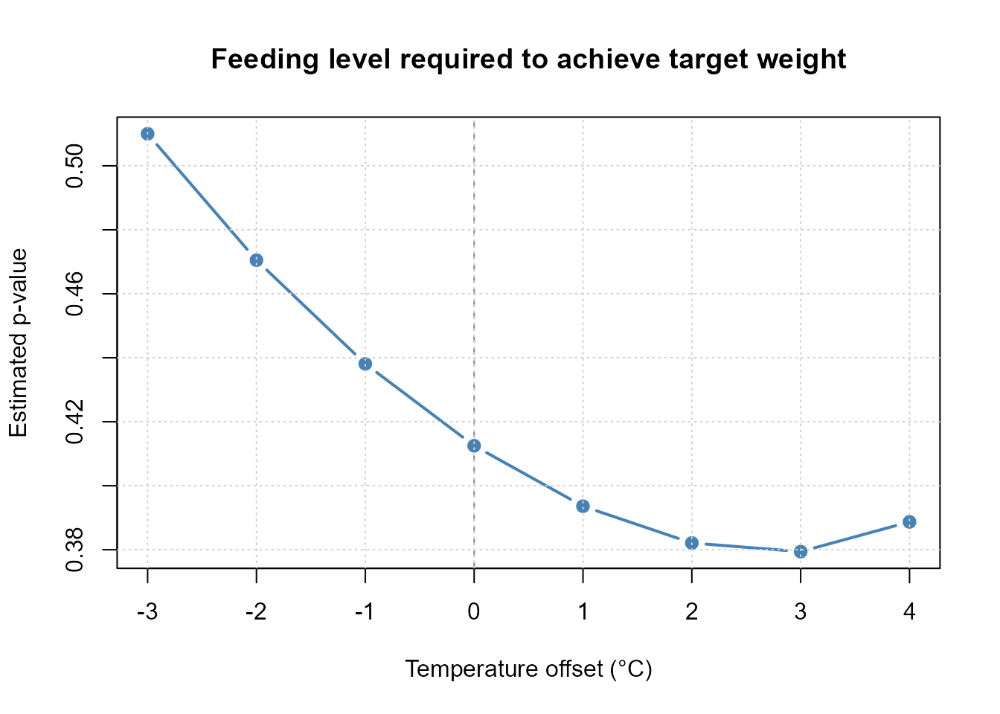
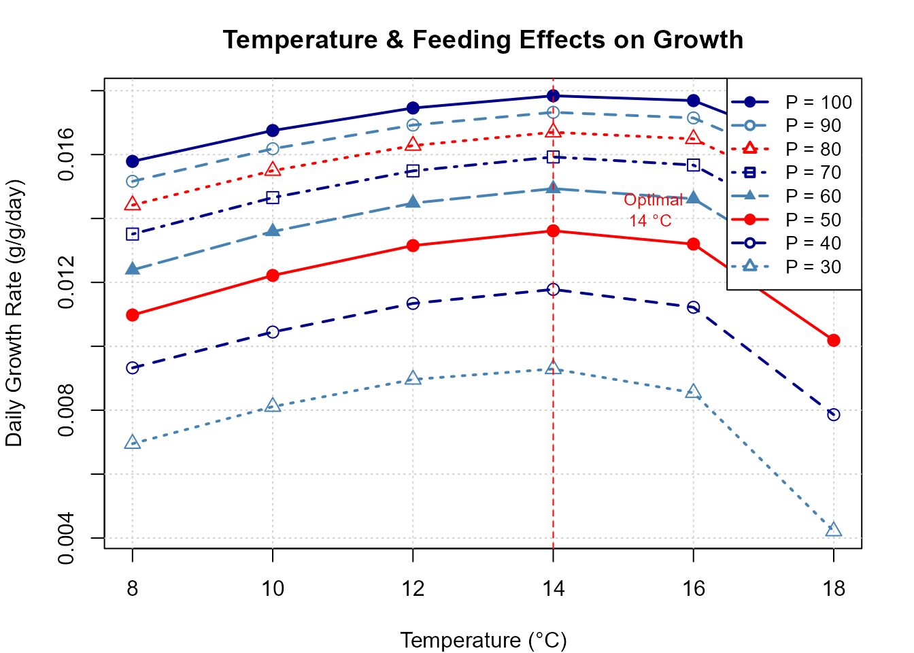
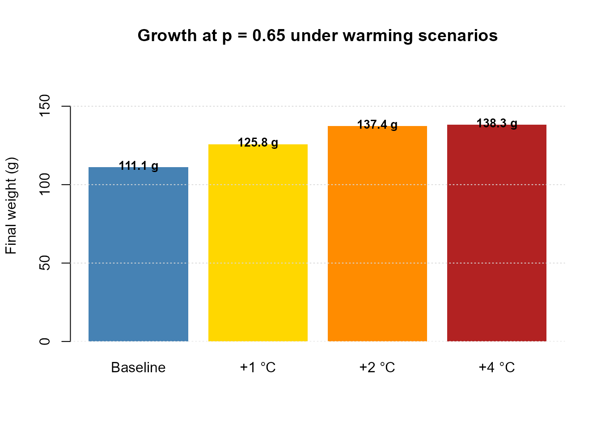
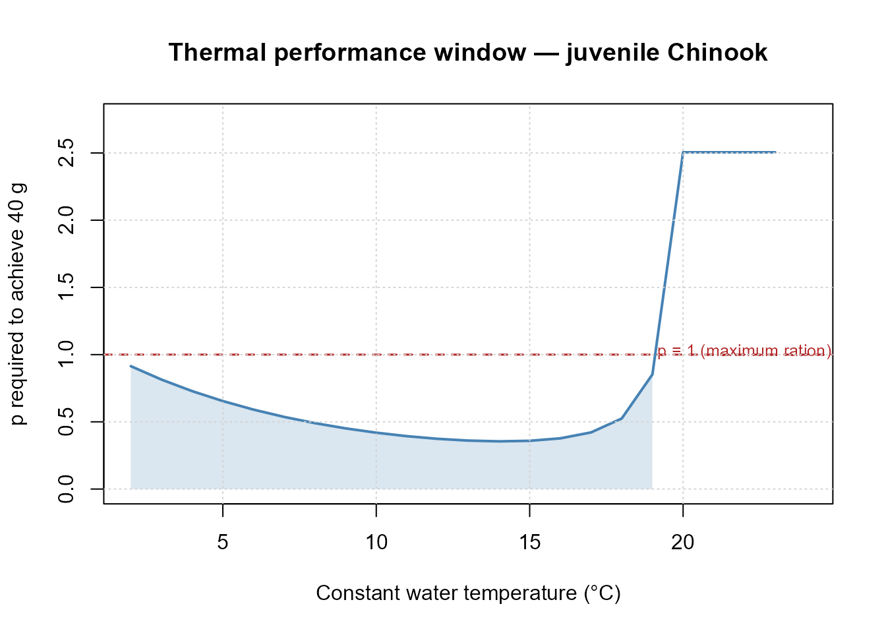

Temperature Sensitivity and Climate Change Scenarios
Hans Ttito
2026-03-29
Source:vignettes/fb4-temperature-climate.Rmd
fb4-temperature-climate.RmdOverview
Temperature is the primary environmental driver in fish
bioenergetics. Because metabolic rates scale non-linearly with
temperature, even modest warming can have disproportionate effects on
growth and consumption. This vignette uses fb4package
to:
- Quantify how final weight responds to temperature shifts (sensitivity analysis)
- Project growth outcomes under +1 °C, +2 °C, and +4 °C warming scenarios
- Identify thermal performance windows using the sensitivity plot
- Compare sensitivity across two ecologically contrasting species
1. Base model — juvenile Chinook salmon
We use 120-day summer conditions as the baseline.
# Species parameters (Stewart & Ibarra 1991)
sp_params_chinook <- list(
consumption = list(
CEQ = 2, CA = 0.303, CB = -0.275,
CQ = 3.0, CTO = 15.0, CTM = 20.0,
CTL = 24.0, CK1 = 0.1, CK4 = 0.13
),
respiration = list(
REQ = 1, RA = 0.00264, RB = -0.217,
RQ = 0.06818, RTO = 0.0234, RTM = 0.0,
RTL = 25.0, RK1 = 1.0, RK4 = 0.13, RK5 = 0.0
),
activity = list(ACT = 1.0, BACT = 0.0),
sda = list(SDA = 0.172),
egestion = list(EGEQ = 1, FA = 0.212, FB = -0.222, FG = 0.631),
excretion = list(EXEQ = 1, UA = 0.0314, UB = 0.58, UG = -0.299),
predator = list(
PREDEDEQ = 2,
Alpha1 = 4500, Beta1 = 6.0,
Alpha2 = 5500, Beta2 = 2.0,
Cutoff = 250
)
)
days <- 1:120
# Baseline temperature: cool Pacific NW summer
temp_base <- data.frame(
Day = days,
Temperature = round(7 + 6 * sin(pi * (days - 20) / 120), 2)
)
# Diet
diet_props <- data.frame(Day = days, Alewife = 0.65, Shrimp = 0.35)
prey_energy <- data.frame(Day = days, Alewife = 4900, Shrimp = 3200)
# Build baseline object
make_bio <- function(temp_df, sp_params, initial_weight = 5) {
bio <- Bioenergetic(
species_params = sp_params,
species_info = list(scientific_name = "Oncorhynchus tshawytscha",
common_name = "Chinook salmon",
life_stage = "juvenile"),
environmental_data = list(temperature = temp_df),
diet_data = list(
proportions = diet_props,
prey_names = c("Alewife", "Shrimp"),
energies = prey_energy
),
simulation_settings = list(initial_weight = initial_weight, duration = 120)
)
bio
}
bio_base <- make_bio(temp_base, sp_params_chinook)
cat(sprintf("Baseline temperature range : %.1f – %.1f °C\n",
min(temp_base$Temperature), max(temp_base$Temperature)))
#> Baseline temperature range : 4.1 – 13.0 °C2. Manual sensitivity analysis across temperature offsets
We run binary search at each temperature offset and record the p required to achieve 40 g after 120 days (our target growth endpoint).
offsets <- c(-3, -2, -1, 0, 1, 2, 3, 4)
target_wt <- 40
results_sens <- lapply(offsets, function(delta) {
temp_shifted <- temp_base
temp_shifted$Temperature <- pmax(1, temp_base$Temperature + delta)
bio_s <- make_bio(temp_shifted, sp_params_chinook)
res <- tryCatch(
run_fb4(bio_s,
fit_to = "Weight",
fit_value = target_wt,
strategy = "binary_search",
verbose = FALSE),
error = function(e) NULL
)
if (is.null(res)) {
return(data.frame(offset = delta, p_value = NA, final_weight = NA))
}
data.frame(
offset = delta,
p_value = round(res$summary$p_value, 4),
final_weight = round(res$summary$final_weight, 1)
)
})
sens_df <- do.call(rbind, results_sens)
knitr::kable(
sens_df,
caption = paste0("p-value required to achieve ", target_wt,
" g across temperature offsets"),
col.names = c("Temp. offset (°C)", "Estimated p", "Final weight (g)")
)| Temp. offset (°C) | Estimated p | Final weight (g) |
|---|---|---|
| -3 | 0.5100 | 40 |
| -2 | 0.4705 | 40 |
| -1 | 0.4381 | 40 |
| 0 | 0.4125 | 40 |
| 1 | 0.3936 | 40 |
| 2 | 0.3821 | 40 |
| 3 | 0.3794 | 40 |
| 4 | 0.3887 | 40 |
plot(sens_df$offset, sens_df$p_value,
type = "b", pch = 19, lwd = 2, col = "steelblue",
xlab = "Temperature offset (°C)",
ylab = "Estimated p-value",
main = "Feeding level required to achieve target weight")
abline(v = 0, lty = 2, col = "gray50")
grid()
Estimated p-value as a function of temperature offset.
Interpretation: At warmer temperatures, Chinook must feed at a higher proportion of maximum ration to achieve the same growth target, because respiration costs increase faster than maximum consumption near the thermal optimum. Above ~+3 °C, the required p approaches or exceeds 1, indicating that growth to 40 g may become impossible at those temperatures.
3. Built-in sensitivity plot
plot(bio, type = "sensitivity") runs the same analysis
internally and produces a formatted figure directly.
plot(bio_base,
type = "sensitivity",
temp_offsets = c(-3, -2, -1, 0, 1, 2, 3, 4),
fit_to = "Weight",
fit_value = 40,
colors = "blue")
#> === GROWTH SENSITIVITY ANALYSIS ===
#> Mode: SEQUENTIAL
#> Temperature range: 8 - 18 °C ( 6 values)
#> P-value range: 0.3 - 1 ( 8 values)
#> Total combinations: 48
#>
#> Processing temperature: 8 °C
#> Processing temperature: 10 °C
#> Processing temperature: 12 °C
#> Processing temperature: 14 °C
#> Processing temperature: 16 °C
#> Processing temperature: 18 °C
#>
#> === ANALYSIS COMPLETE ===
#> Successful simulations: 48 / 48 ( 100 %)
#> Maximum growth rate: 1.768 %/d
#> Optimal conditions: 14 °C, 100 % feeding (p = 1.00 )
Built-in temperature sensitivity plot. Each point shows the p required to achieve the target weight at a given temperature offset.
4. Climate change scenarios — projected growth
Rather than fixing a target weight, here we fix p = 0.65 (estimated from field data) and ask: how does final weight change under warming scenarios?
p_fixed <- 0.65
scenarios <- c("Baseline" = 0, "+1 °C" = 1, "+2 °C" = 2, "+4 °C" = 4)
scenario_results <- lapply(names(scenarios), function(sc) {
delta <- scenarios[[sc]]
temp_s <- temp_base
temp_s$Temperature <- pmax(1, temp_base$Temperature + delta)
bio_s <- make_bio(temp_s, sp_params_chinook)
res <- run_fb4(bio_s,
fit_to = "p_value",
fit_value = p_fixed,
strategy = "direct_p_value",
verbose = FALSE)
if (is.null(res)) return(NULL)
data.frame(
Scenario = sc,
Delta_T = delta,
Final_wt_g = round(res$summary$final_weight, 1),
Consumption = round(res$summary$total_consumption_g, 1)
)
})
scenario_df <- do.call(rbind, scenario_results)
knitr::kable(
scenario_df,
caption = paste0("Projected outcomes at p = ", p_fixed,
" under four temperature scenarios"),
col.names = c("Scenario", "Δ T (°C)", "Final weight (g)", "Total consumption (g)")
)| Scenario | Δ T (°C) | Final weight (g) | Total consumption (g) |
|---|---|---|---|
| Baseline | 0 | 111.1 | 264.1 |
| +1 °C | 1 | 125.8 | 306.8 |
| +2 °C | 2 | 137.4 | 343.6 |
| +4 °C | 4 | 138.3 | 362.4 |
bar_cols <- c("steelblue", "gold", "darkorange", "firebrick")
bp <- barplot(scenario_df$Final_wt_g,
names.arg = scenario_df$Scenario,
col = bar_cols,
ylab = "Final weight (g)",
main = paste("Growth at p =", p_fixed,
"under warming scenarios"),
ylim = c(0, max(scenario_df$Final_wt_g) * 1.25),
border = NA)
text(bp, scenario_df$Final_wt_g + 0.5,
labels = paste0(scenario_df$Final_wt_g, " g"),
cex = 0.85, font = 2)
grid(nx = NA, ny = NULL, col = "gray85")
Projected final weight under climate change scenarios (p fixed at 0.65).
5. Thermal performance window
The metabolism–consumption balance defines a thermal performance window: the temperature range where the fish can maintain positive growth (p < 1). We can derive it by finding the temperature at which p = 1 for our target weight.
# Sweep a fine temperature grid and record required p
temp_grid <- seq(2, 24, by = 1)
p_at_target <- sapply(temp_grid, function(t_const) {
temp_const <- data.frame(Day = days, Temperature = t_const)
bio_t <- make_bio(temp_const, sp_params_chinook)
tryCatch({
res <- run_fb4(bio_t,
fit_to = "Weight",
fit_value = target_wt,
strategy = "binary_search",
verbose = FALSE)
res$summary$p_value
}, error = function(e) NA_real_)
})
perf_df <- data.frame(Temperature = temp_grid, p_required = p_at_target)
feasible <- perf_df[!is.na(perf_df$p_required) & perf_df$p_required <= 1, ]
cat(sprintf("Feasible temperature range for %.0f g in %d days : %.0f – %.0f °C\n",
target_wt, max(days),
min(feasible$Temperature), max(feasible$Temperature)))
#> Feasible temperature range for 40 g in 120 days : 2 – 19 °C
plot(perf_df$Temperature, perf_df$p_required,
type = "l", lwd = 2, col = "steelblue",
xlab = "Constant water temperature (°C)",
ylab = "p required to achieve 40 g",
main = "Thermal performance window — juvenile Chinook",
ylim = c(0, max(perf_df$p_required, na.rm = TRUE) * 1.1))
# Shade feasible zone
polygon(c(min(feasible$Temperature), feasible$Temperature,
max(feasible$Temperature)),
c(0, feasible$p_required, 0),
col = adjustcolor("steelblue", alpha.f = 0.2),
border = NA)
abline(h = 1, lty = 2, col = "firebrick", lwd = 1.5)
text(max(temp_grid) - 2, 1.02, "p = 1 (maximum ration)", col = "firebrick", cex = 0.8)
grid()
Thermal performance window: p required to achieve 40 g over 120 days at constant temperatures. The shaded region shows the feasible window (p ≤ 1).
6. Management implications
These analyses have direct relevance for fish management under climate change:
- Habitat quality: The thermal performance window defines suitable temperature ranges for stocking or conservation planning.
- Consumption modelling: Holding p fixed while warming temperatures leads to lower growth at very warm temperatures, as respiration increases faster than consumption.
- Bioenergetics-based monitoring: Changes in condition factor (K) in monitoring data can be translated into shifts in p using this framework, providing a mechanistic link between climate variability and fish condition.
References
Deslauriers D, Chipps SR, Breck JE, Rice JA, Madenjian CP (2017). Fish Bioenergetics 4.0: An R-Based Modeling Application. Fisheries 42(11):586–596. https://doi.org/10.1080/03632415.2017.1377558
Kitchell JF, Stewart DJ, Weininger D (1977). Applications of a bioenergetics model to yellow perch (Perca flavescens) and walleye (Stizostedion vitreum vitreum). Journal of the Fisheries Research Board of Canada 34(10):1922–1935. https://doi.org/10.1139/f77-258
Parmesan C, Yohe G (2003). A globally coherent fingerprint of climate change impacts across natural systems. Nature 421:37–42. https://doi.org/10.1038/nature01286